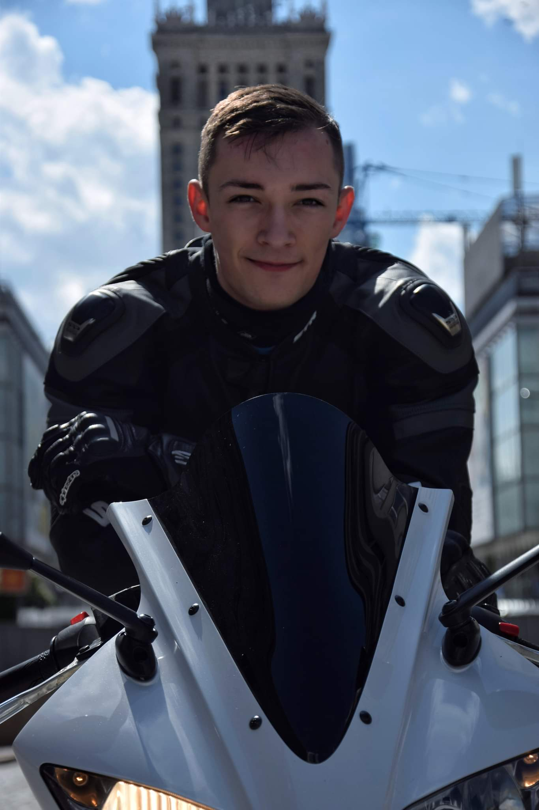

O mnie

Kim jestem?
Jestem osobą, która w życiu kieruje się pasją, ambicją i pozytywnym nastawieniem. Uwielbiam wyzwania, zarówno w pracy, jak i w życiu prywatnym. Moje doświadczenie zawodowe i umiejętności technologiczne koncentrują się głównie na programowaniu i projektowaniu rozwiązań IT, ale także na rozwijaniu nowych pasji. Jestem osobą spontaniczną, ambitną i zawsze uśmiechniętą. Moje podejście do pracy charakteryzuje się pełnym zaangażowaniem, uczciwością i dokładnością.
Moje cele:
- Rozwój umiejętności w programowaniu i projektowaniu aplikacji.
- Realizacja projektów technologicznych, które mają realny wpływ na codzienne życie.
- Ciągłe doskonalenie się, zarówno zawodowo, jak i osobiście.